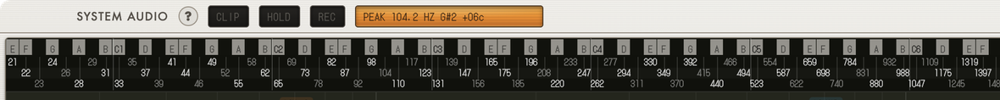
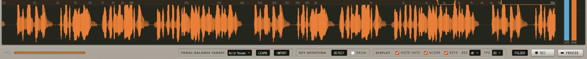

Spectrl
Spectrum, key detection, note frequencies, tonal balance and a system-audio sampler in one window.
A spectrum analyser on its own is one tool. Spectrl is five, working from a single signal: live spectrum with musical note mapping, a Scale panel that listens for ten seconds and names the key, loudness metering, an oscilloscope, and tonal-balance targets to compare against — one lightweight window instead of five plugins. It taps your Mac's system audio directly, so sampling anything playing through it is one click, with nothing to route or insert on the master before you bounce.

Five tools, one signal
The top of the window answers "what note is that?" A ruler of note names sits over the frequency axis, so a peak has a name before you have worked out what 104 Hz is. The PEAK readout gives you the exact frequency, the nearest note and how many cents sharp or flat it is, which is the number you actually need when a bass is fighting a kick.

Tonal-balance targets draw a corridor over the spectrum showing where mastered tracks of a style usually sit, with a dashed line down its centre. Pink noise is there as the mathematical reference the rest are judged against; the genre targets (club master, hypnotic techno, acid house, dub house, dub techno) are tilts measured from that school of record. The corridor shows shape and not loudness: it aligns itself to your own level, so a quiet mix and a loud one with the same tilt sit in the same place.
Learn is the same idea pointed at your own music. Play a reference track, press Learn, and its curve becomes the target you are compared against: your own song, or somebody else's, instead of a preset.

The footer is the rest of the toolkit. Target and Learn, My Song, the key/scale detector, the note-info readout, the oscilloscope, the note ruler, resolution up to 4K bins, refresh rate, record to WAV, and Freeze, which stops the spectrum, the meters and the scope together so hovering for an exact value is worth doing. Sample rate follows the audio device rather than resampling behind your back, and holding the mouse on the spectrum stretches the averaging 6× so a fleeting peak stays legible long enough to read.

What it does
- Reads in notes, not just hertz. A note ruler under the spectrum, the nearest note under your cursor in the footer, and full-precision frequencies on hover.
- Tells you the key. The Scale panel listens to ten seconds of incoming audio at a press of a button, then shows the predicted key and highlights it on the note ruler until you dismiss it.
- Tonal-balance targets. Compare what you are hearing against a target curve, or against your own song, with Learn.
- Loudness metering and an oscilloscope, frozen together with the spectrum by a single keypress. Freeze is what makes hovering for exact values useful.
- Hold to smooth. Press and hold on the spectrum and the averaging stretches 6×, so a fleeting peak stays legible long enough to read off it. Release snaps back to live.
- Samples anything your Mac is playing, in one click. No routing, no aggregate device, no separate capture app. Press record and Spectrl grabs whatever audio is already coming out of your speakers straight to WAV, at your DAW's sample rate, following the device rather than resampling behind your back.
- As light as you need it. FFT resolution up to 4K bins and a refresh rate of 30, 15, 8 or 4 fps, which govern the spectrum and the meters together. Peak detection runs off the full audio stream at every setting, so a low rate costs you smoothness and nothing else — leave the window open all session next to a heavy set.
Why standalone
Spectrl runs as its own app, not a plugin, the way a rack analyser sits beside your outboard gear rather than inside it. It reads your Mac's system audio directly through a Core Audio tap, so it works with anything making sound, not just your DAW. That separation cuts both ways: a DAW crash leaves Spectrl running and whatever it was capturing intact, and a Spectrl hiccup never touches your session. Two independent programs, each doing one job, instead of one process where either can take the other down.
Requirements
macOS 14.4 (Sonoma) or later, on Apple Silicon.
On first launch macOS asks for permission to record this computer's audio. Grant it, because without it the screen stays dark and says so.
Version 1.0.0
It does not record your screen
Spectrl captures audio through a Core Audio process tap, which asks for audio and nothing else. If you granted an older build Screen Recording permission, you can revoke it in System Settings → Privacy & Security → Screen & System Audio Recording. Nothing will break.
It does not touch your microphone, and tapping does not mute or alter what you hear.